Ce que contient cet atlas
Trois sources structurent ces pages : l’instantané communautaire des données de jeu du 18 novembre 2026, les fiches publiques par lieu, et les notes officielles des correctifs du 1.1.0.0 au 1.3.0.0. Chaque fiche de lieu reprend les sorties documentées, les transits, les rencontres, les dangers de terrain, les clés et les écarts entre profils, avec la date et la limite à chaque fois.
13
Treize lieux de référence. Douze lieux de raid plus le Terminal, dont l’accès et la durée divergent entre les sources consultées.
119
Sorties documentées. Chaque sortie est donnée avec son camp, sa condition d’ouverture et son caractère à usage unique ou non.
3
Profils comparés. PvP Zone, PvE Zone et PvP Season : les écarts réels entre les trois sont isolés, pas supposés.
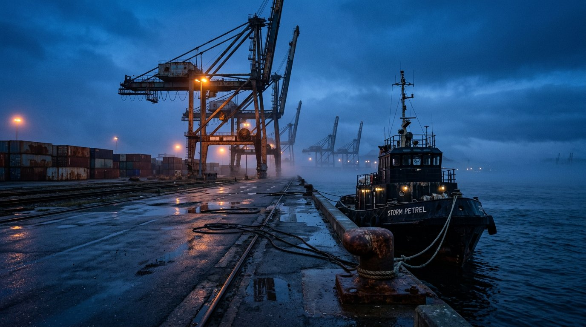
Ce que cet atlas ne dit pas. Aucune position de spawn n’est donnée comme un point à-viser : les zones sont celles des données, et elles sont exprimées en identifiants de zone, pas en repères de terrain. Les chances d’apparition sont celles de l’instantané consulté, à la date indiquée, et elles ne valent pas probabilité de raid tant qu’elles ne sont pas recoupées dans le client.
Les treize lieux
Les filtres ci-dessous agissent sur les fiches. Sans JavaScript, les treize fiches restent listées et accessibles : le filtrage n’est qu’un confort, jamais un accès exclusif.
Profil
Menace
13 lieux affichés sur 13
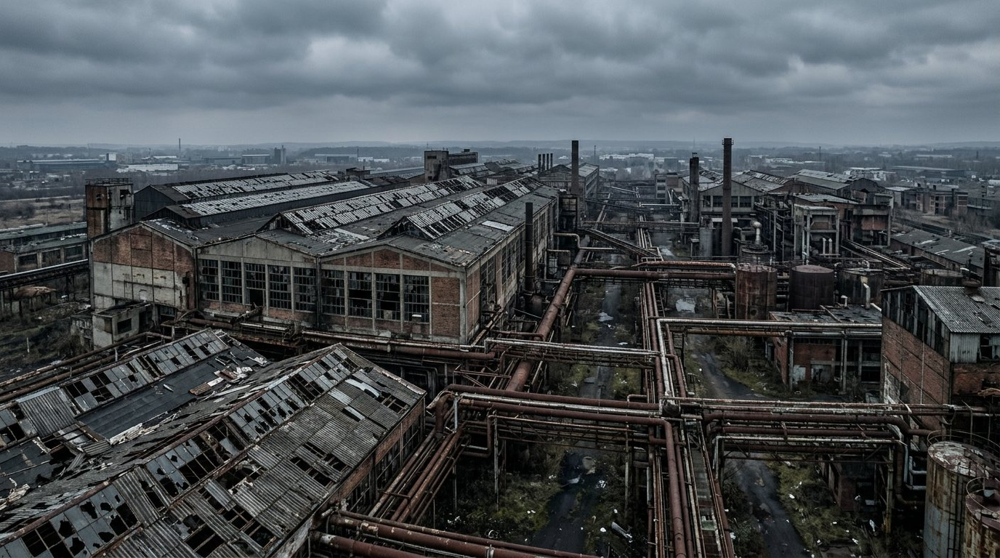
Usine
La zone industrielle et les installations de l'usine chimique n° 16 furent louées illégalement à la société TerraGroup. Pendant les Contract Wars, l'u
Écarts : PvE Zone
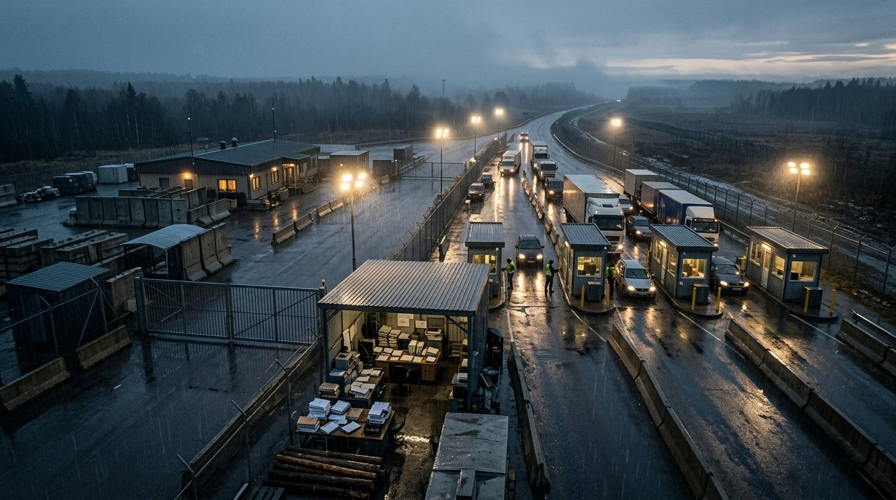
Douanes
Une vaste zone de parc industriel située à proximité de la zone de l'usine. Elle abrite un terminal douanier, des installations de stockage de carbura
Écarts : PvE Zone
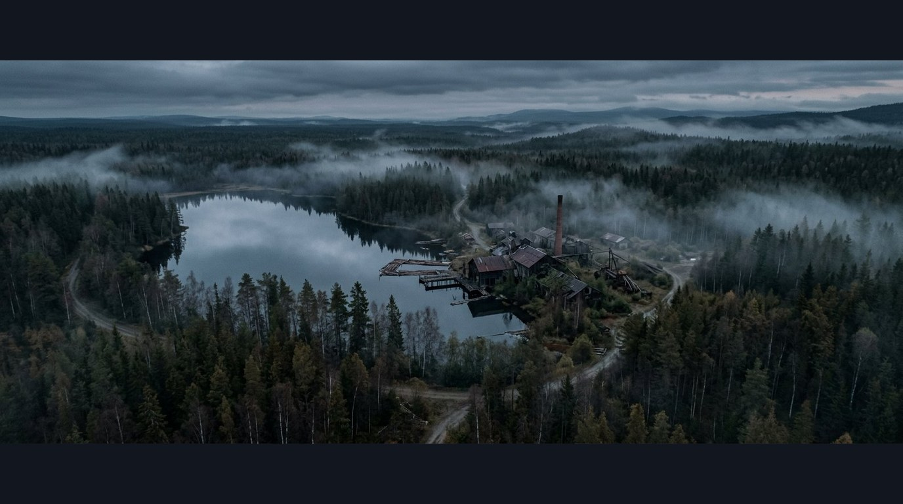
Bois
La réserve naturelle de Priozersk fait depuis peu partie des réserves naturelles protégées par l'État dans le district fédéral du Nord-Ouest.
Écarts : PvE Zone, PvP Season
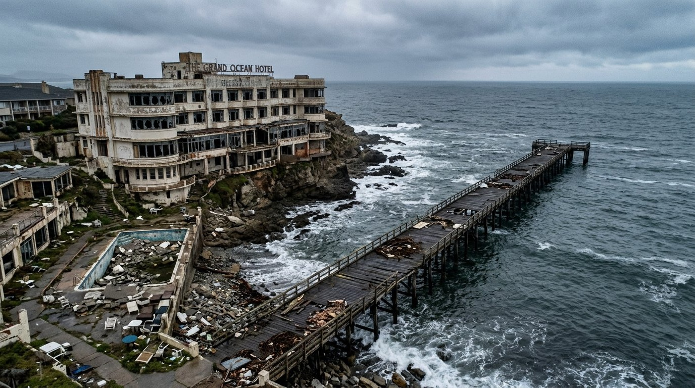
Littoral
Le littoral forme une grande partie de la périphérie de Tarkov et est adjacent à la zone portuaire. Son territoire comprend un village partiellement
Écarts : PvE Zone, PvP Season
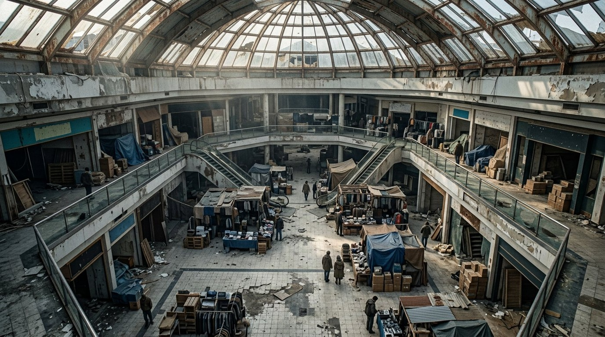
Échangeur
L'échangeur sud est un lieu de transport essentiel pour la ville. Cette zone stratégique relie le port et la zone portuaire à la périphérie industriel
Écarts : PvE Zone
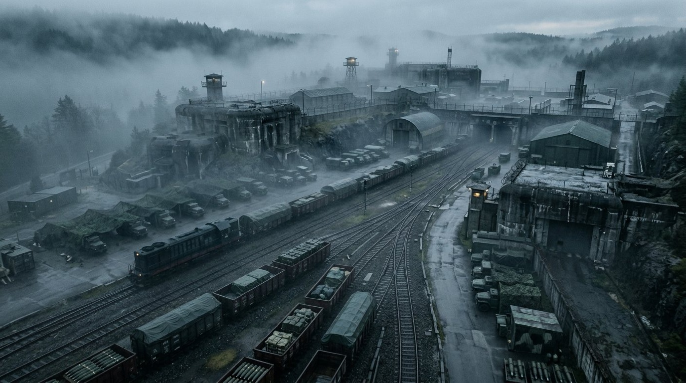
Base militaire
La base secrète de l'Agence Fédérale de Réserve d'État qui, selon les légendes urbaines, contient suffisamment de provisions pour durer des années : n
Écarts : PvE Zone
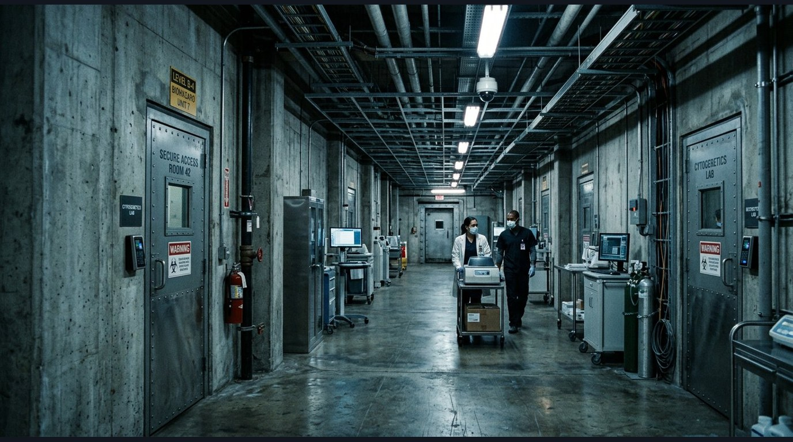
Le labo
Installation secrète souterraine de TerraGroup Labs, cachée sous le centre de Tarkov. Officiellement, ce centre de recherche n'existe pas et, d'après
Écarts : PvE Zone, PvP Season
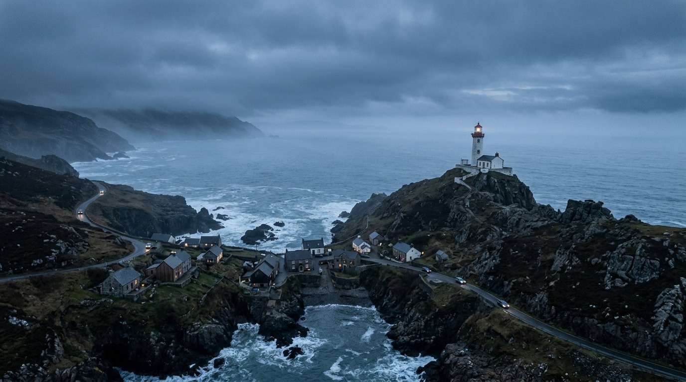
Phare
Le phare du Cap Dalniy était un point stratégique important sur la route de Tarkov. Pendant les Contract Wars, il était le principal point d'entrée de
Écarts : PvE Zone
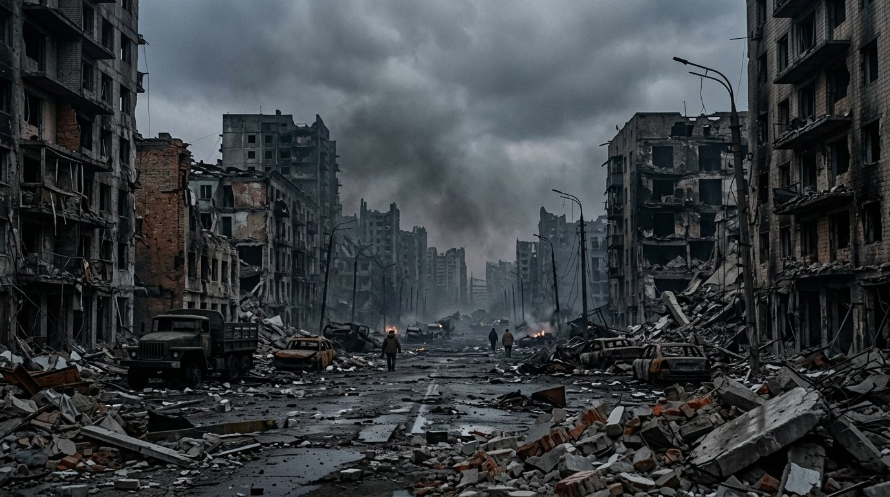
Rues de Tarkov
Le centre-ville de Tarkov abrite des banques, des centres commerciaux et des hôtels, ainsi que toutes les autres commodités dont une métropole prospèr
Écarts : PvE Zone, PvP Season
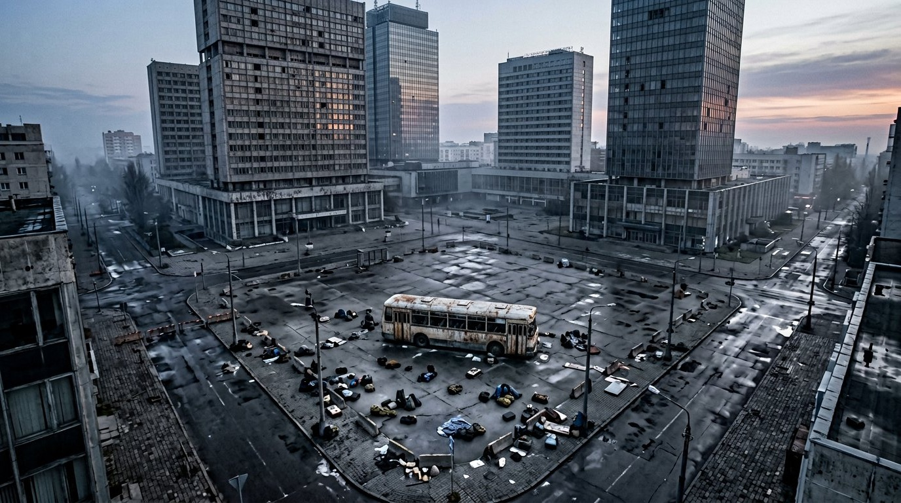
Point zéro
Le centre-ville de Tarkov. C'est ici que TerraGroup avait son quartier général. C'est ici que tout a commencé.
Écarts : PvE Zone
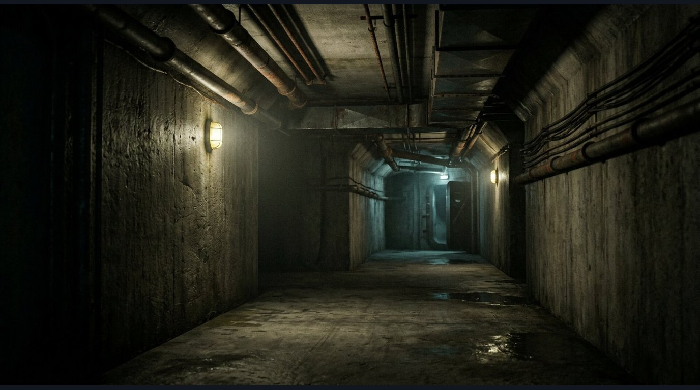
Le labyrinthe
Une installation de l'un des sous-traitants de TerraGroup, Knossos LLC. D'après les sources publiques, ils construisent des parcs d'attractions et à t
Écarts : PvE Zone
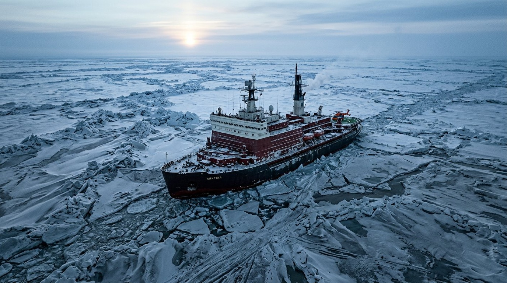
Brise-glace
Dans le golfe de Finlande, piégé à l’intérieur du blocus entourant Tarkov, se trouve le brise-glace nucléaire « Boreas », appartenant à la société log
Profils identiques au profil de référence
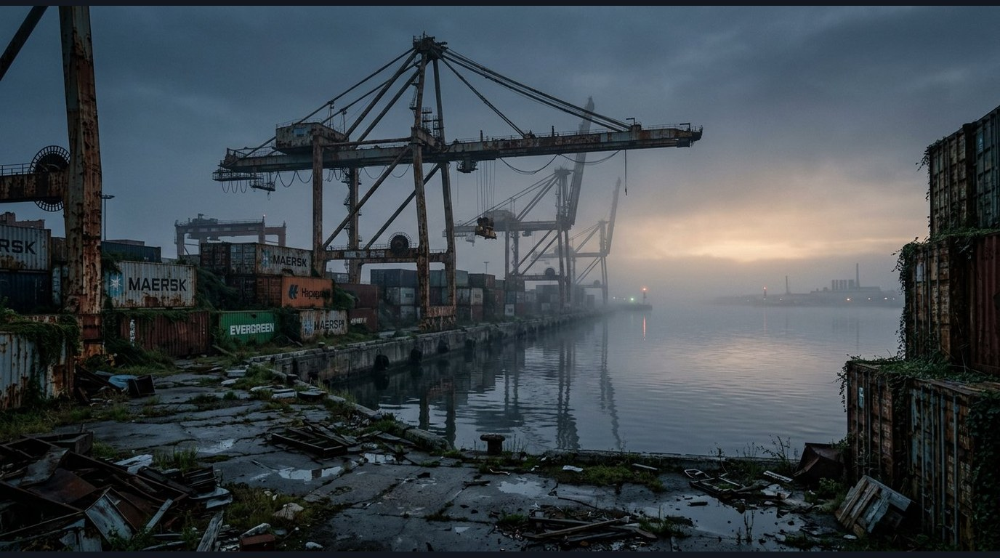
Terminal
Le terminal portuaire sud est sous le contrôle des forces armées russes depuis le début du conflit de Tarkov. Après la mise en quarantaine de la ville
Écarts : PvP Season
Aucun lieu ne correspond à ces critères. Effacez la recherche ou élargissez le filtre.
Comparer deux lieux
Le comparatif oppose deux fiches ligne à ligne : durée, effectif, niveaux, sorties par camp, transits, rencontres, dangers relevés et variantes. Les valeurs proviennent du même instantané que les fiches, donc la comparaison est homogène.
Le réseau de transits
Vingt-neuf transits documentés relient les lieux entre eux. Un transit n’est pas une sortie : il déplace le raid vers un autre lieu, dans un délai qui peut en interdire l’usage. Trois lieux n’ont aucun transit sortant — le Brise-glace, le Labyrinthe et le Terminal — et un seul, les Rues de Tarkov, en propose vers trois destinations.
| Lieu de départ | Transit | Destination | Conditions | Emplacement |
|---|---|---|---|---|
| Usine | Transit vers les bois | woods | Only available 1 min after raid start | At the Courtyard Gate extraction |
| Usine | Transit vers les douanes | customs | Only available 1 min after raid start | Med Tent Gate extraction side outdoor area |
| Usine | Transit vers le labo | the-lab-dark | — | — |
| Douanes | Transit vers la base militaire | reserve | Only available 1 min after raid start | — |
| Douanes | Transit vers l'usine | factory | Only available 1 min after raid start | Next to the Old Gas Station extraction |
| Douanes | Transit vers l'échangeur | interchange | Only available 1 min after raid start | Next to the Trailer Park extraction, inside the bus |
| Douanes | Transit vers le littoral | shoreline | Only available 1 min after raid start | — |
| Bois | Transit vers l'usine | factory | Only available 1 min after raid start | — |
| Bois | Transit vers la base militaire | reserve | Only available 1 min after raid start | — |
| Bois | Transit vers le phare | lighthouse | Only available 1 min after raid start | — |
| Bois | Transit vers les douanes | customs | Only available 1 min after raid start | — |
| Littoral | Transit vers le phare | lighthouse | Only available 1 min after raid start | In front of the Path to Lighthouse extraction |
| Littoral | Transit vers le terminal | terminal | Only available 1 min after raid start in the time period of 21:00-6:00 ; + ; or ; ; or ; ; or ; ; per player | Requires presenting the access item at the port garrison intercom to not get shot ; |
| Littoral | Transiter vers le labyrinthe ? | the-labyrinth | — | — |
| Littoral | Transit to Icebreaker | icebreaker | Only available 1 min after raid start ; per player Maximum of 3 players | At the pier ; Has to be unlocked through the story chapter Boreas |
| Échangeur | Transit vers les douanes | customs | Only available 1 min after raid start | At the southern end of the highway |
| Échangeur | Transit vers les rues de Tarkov | streets-of-tarkov | — | — |
| Base militaire | Transit vers les douanes | customs | Only available 1 min after raid start | North of the black bishop barracks, where the train track ends |
| Base militaire | Transit vers les bois | woods | Only available 1 min after raid start | ; At the map border northwest of the train yard |
| Base militaire | Transit vers le phare | lighthouse | Only available 1 min after raid start | ; At the map border southwest of the train yard |
| Le labo | Transit vers les rues de Tarkov | streets-of-tarkov | — | — |
| Phare | Transit to Shoreline | shoreline | Only available 1 min after raid start | Next to the Path to Shoreline extraction |
| Phare | Transit to Reserve | reserve | Only available 1 min after raid start | On the road leading to the Road to Military Base V-Ex extraction |
| Phare | Transit to Woods | woods | Only available 1 min after raid start | On the road leading to the Road to Northern Checkpoint extraction |
| Phare | Transit to Icebreaker | icebreaker | Only available 1 min after raid start ; per player Maximum of 3 players | At the pier next to the seaside houses ; Has to be unlocked through the story chapter Boreas |
| Rues de Tarkov | Transit vers le Point Zéro | ground-zero-21 | — | — |
| Rues de Tarkov | Transit vers l'échangeur | interchange | Only available 1 min after raid start | Southwest of the Concordia apartment complex |
| Rues de Tarkov | Transit vers le labo | the-lab-dark | — | — |
| Point zéro | Transit vers les rues de Tarkov | streets-of-tarkov | — | — |
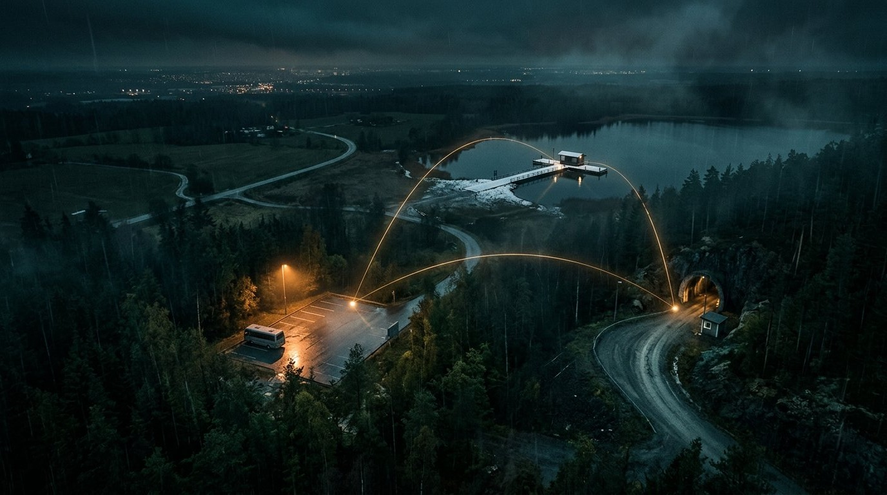
Le transit n’est jamais gratuit. Chaque passage demande un objet, une clé ou une minute d’attente : le transit vers le Labo depuis les Rues de Tarkov exige une carte d’accès TerraGroup Labs par joueur, et la plupart des transits ne sont disponibles qu’une minute après le début du raid. Vérifier la liste complète avant de choisir son point d’entrée.
Variantes et événements
Six variantes sont rattachées aux lieux de référence dans l’instantané consulté : deux sur l’Usine, deux sur le Labo, deux sur Point zéro. Ce ne sont pas des cartes à part entière mais des configurations d’un lieu, avec des règles d’assurance et de file d’attente propres.
| Lieu | Image | Variante | Rattachement | Durée | Effectif | Sorties | Rencontres |
|---|---|---|---|---|---|---|---|
| Usine | 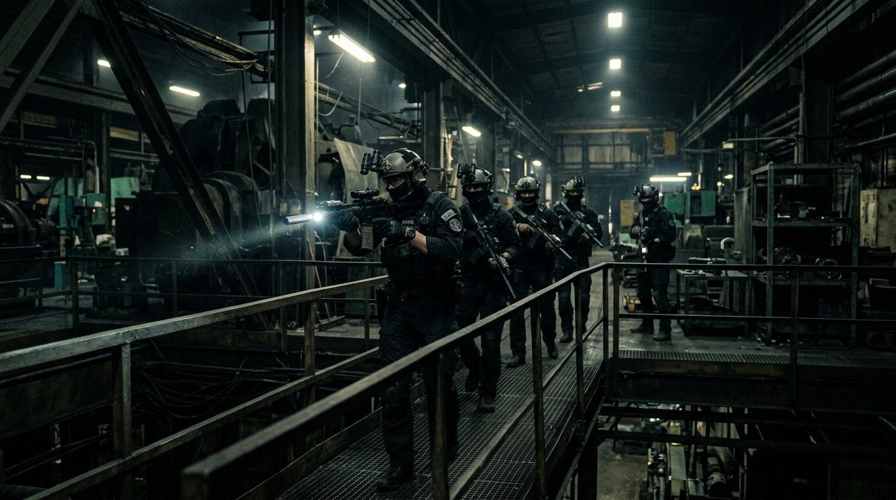 | Usine de nuit | Variante nocturne de l’Usine | 25 min | 5-6 | 9 | Infected Tagilla, Prêtre Cultiste, infectedScreamer |
| Usine | 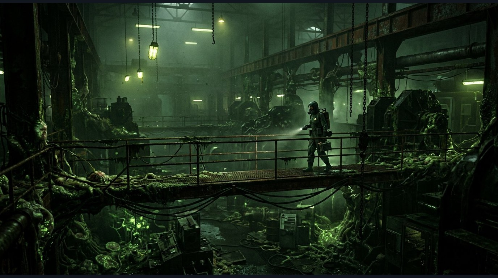 | Infected Factory | Événement infecté sur l’Usine | 20 min | 4-6 | 0 | Infected Tagilla, Infecté, Infecté |
| Le labo | 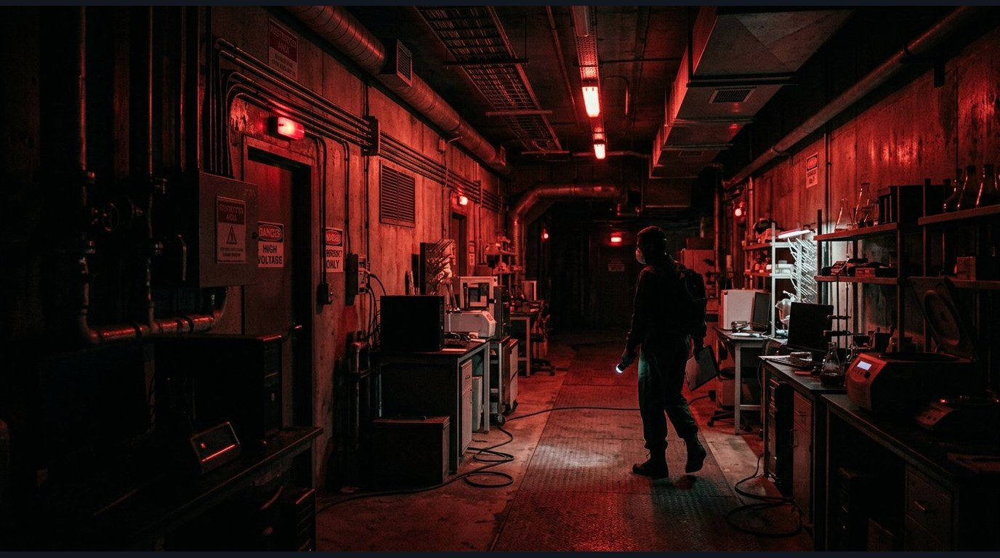 | Le labo (Dark) | Variante obscurité du Labo | 30 min | 8-10 | 0 | Black Div., Raider, The Wedge (Labs) |
| Le labo | 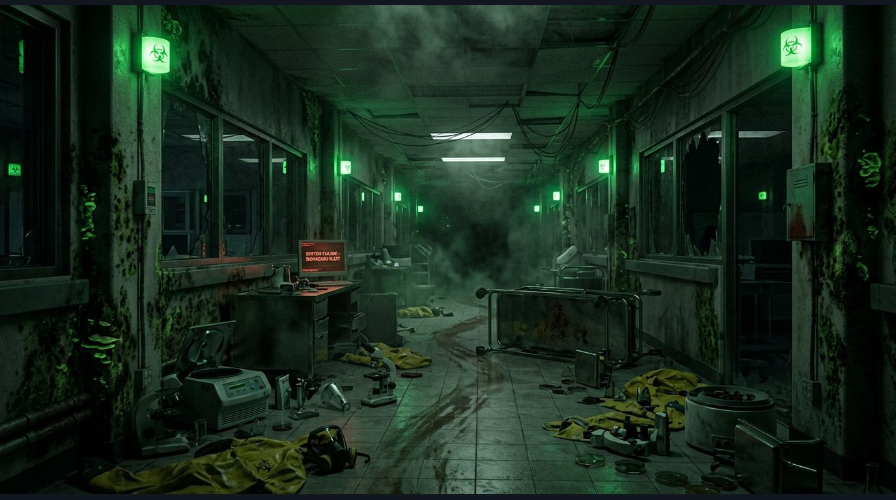 | Infected Lab | Événement infecté sur le Labo | 30 min | 8-10 | 0 | Infected Tagilla, Infecté, Infecté |
| Point zéro | 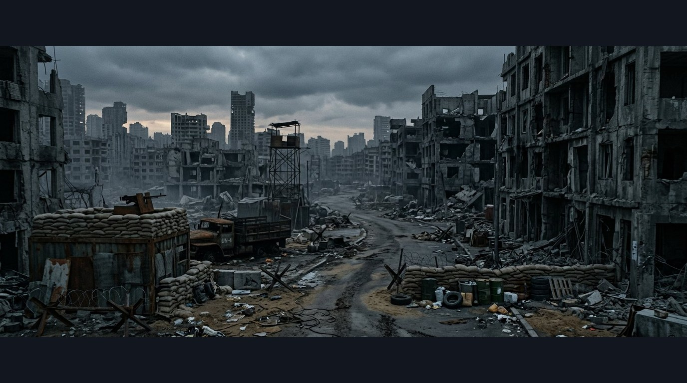 | Point zéro 21+ | Variante 21+ de Point zéro | 30 min | 9-12 | 6 | Prêtre Cultiste, infectedScreamer |
| Point zéro | 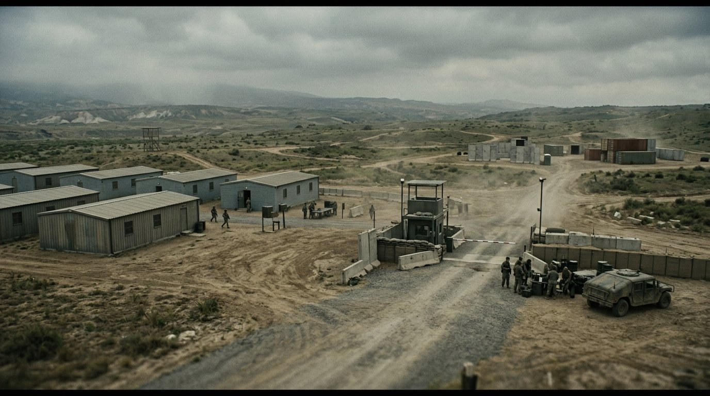 | Ground Zero Tutoriel | Variante tutoriel de Point zéro | 30 min | 9-12 | 0 | — |
Une variante d’événement n’est pas un raid normal. L’Infected Factory, l’Infected Lab, la Point zéro 21+ et le Point zéro Tutoriel remplacent tout ou partie des rencontres habituelles. Le tutoriel n’a aucune sortie : c’est une configuration d’apprentissage, pas une carte à raider.
Cartes interactives de référence
Ces fiches décrivent les lieux, mais une fiche n’est pas une carte navigable. Les sites ci-dessous proposent des cartes interactives du jeu — vues 2D, 3D, points de repère et marqueurs de mission — et servent de références de lecture pour compléter ces pages. Chaque lien est une ressource externe ; le guide ne reprend ni leur fond ni leurs marqueurs comme données.
Référence
Tarkov.dev — cartes. Cartes interactives gratuites en 2D et 3D : extractions, caches, spawns et marqueurs de mission pour tous les lieux.
Complet
MapGenie. Expérience interactive la plus aboutie : plus de 500 points de butin, spawns PMC et Scav, extractions, avec application mobile. Freemium.
3D
RE3MR — cartes isométriques. Cartes 3D de haute qualité pour chaque lieu, y compris les sous-cartes spécialisées (dortoirs, tunnels, resort). Gratuit.
Communautaire
GameMaps.net — Tarkov. Variantes de cartes communautaires avec suivi de missions et filtrage de niveau. Gratuit.
Wiki
Wiki Fandom — cartes. Cartes interactives définitives avec marqueurs de spawns, extractions, butin, clés et missions pour tous les lieux.
Tutoriel
Tarkov.help — carte. Cartes de navigation avec points de mission, utile pour la planification de raid.
Comment les utiliser. Ces sites sont des références de lecture : ils complètent les fiches, mais les chiffres du guide (sorties, transits, rencontres, chances) viennent de l’instantané du 18 novembre 2026 et ne sont pas repris de ces cartes. Consultez une carte interactive pour visualiser un lieu ; consultez la fiche pour les données chiffrées et datées.
Sources et limites
Les données de jeu viennent d’un instantané communautaire daté du 18 novembre 2026, disponible en trois profils. Les fiches publiques par lieu, qui décrivent les sorties, les transits, les clés et les lore, sont une source communautaire distincte : quand les deux se contredisent, la fiche le signale au lieu de trancher.
- Carte de Tarkov — liste des lieux : transits, rencontres, durées, joueurs et zones de danger.
- Carte de Tarkov — version française : libellés et durées en français.
- Tarkov.dev — cartes et rencontres : instantané du profil PvP Zone.
- Tarkov.dev — libellés français, profil PvE et profil saisonnier : intitulés de sortie et écarts.
- Patch 1.1.5.0, patch 1.2.0.0 et patch 1.3.0.0 : refontes et corrections qui changent les fiches.
- MapGenie et Kappa Guide : aides de lecture communautaires, utilisées comme repères de lecture et jamais comme source de chiffres.
La version de jeu de référence est celle relevée dans la chronologie des correctifs : la documentation de la communauté indique une version 1.3.0.2 publiée en novembre 2026, et une mise à jour technique de la même période corrigeait l’éclairage de l’Usine infectée et un corps de scientifique du Laboratoire infecté. Ces correctifs ne changent ni les sorties ni les rencontres, mais ils rappellent que ces tables décrivent un instantané, pas un état permanent. Chronologie des correctifs, historique des annonces et notes de la mise à jour technique.
Les outils communautaires qui suivent les déplacements en direct s’appuient tous sur la même API que nos données : les rapports de position des Goon sont transportés dans la charge utile des cartes de chaque profil, sans point d’accès distinct. C’est un indice de cohérence sur la provenance de nos chiffres, pas une validation du fond. Suivi des Goon.
Les limites sont explicites : les probabilités d’apparition ne sont pas des fréquences de raid, les positions de spawn ne sont pas des repères, les durées divergent parfois entre les sources, et les fichiers eux-mêmes ne remplacent pas une vérification dans le client. Les commandes du jeu et les profils de jeu sont rappelés dans le guide pour situer ces limites.